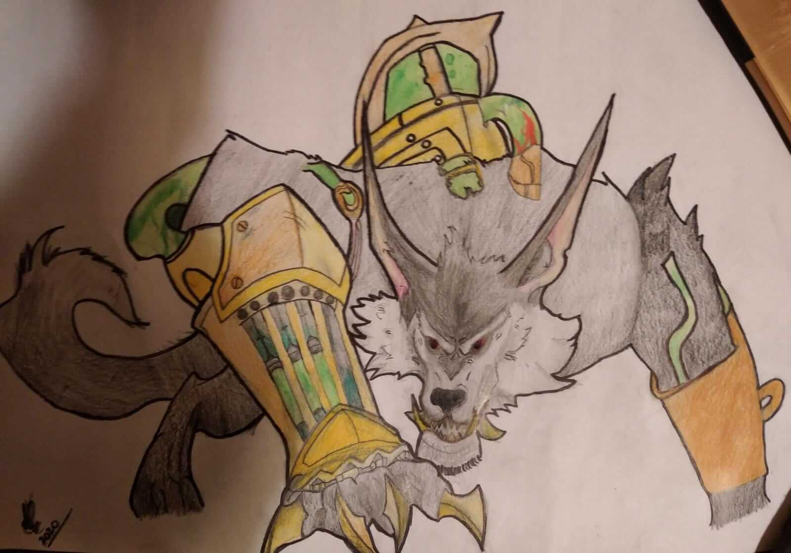
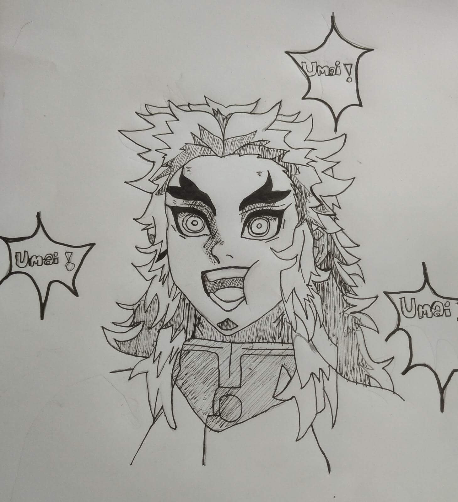

¿Quien soy?
Vanina Lopetegui
es mi nombre, nací el 8 de diciembre de 2003, estudio programación, aspiro a trabajar de eso y poder ir al gimnasio y jugar juegos en mi tiempo libre. También amo un montón viajar así que es un plan a futuro para cumplir.
Aquí les dejo una música que me gusta un montón
A mí me gustan mucho los juegos como League of Legends, Spore, Sea of Thieves y muchos otros, y como me gusta mucho dibujar hice a Warwick de lol!
Por otro lado, últimamente desde 2021 estoy viendo mucho anime, uno de mis favoritos es Kimetsu no Yaiba, y también hice un dibujo de mi personaje favorito Rengoku
